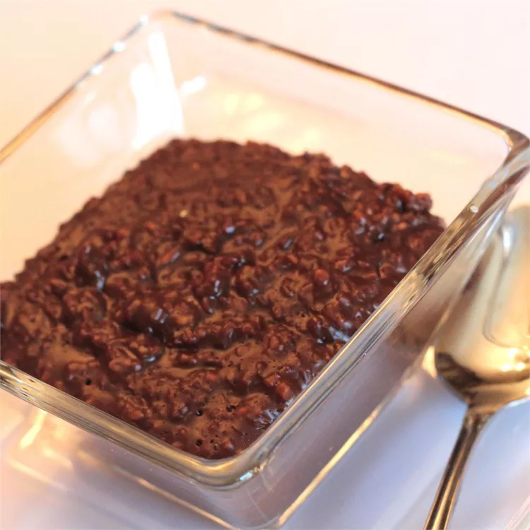

Chocolate Oatmeal Porridge

Description
A creamy, chocolatey breakfast treat minus the fat and excessive sugar. Tastes
like tiny chocolate teddy bears! If porridge is too thick or oats are uncooked, add
more boiling water to it till cooked and desired thickness reached. Serve with a
splash of cold milk.
Ingredients
- ⅓ cup unsweetened cocoa powder
- ¾ cup hot water
- 2 cups milk
- ⅛ teaspoon salt
- 1 cup steel cut oats
- 5 tablespoons honey
Steps-by-Steps
- Dissolve cocoa powder in hot water in a saucepan
- milk and bring to a boil. Add salt and oats
- simmer over low heat, stirring constantly, until oatmeal has thickened, about 15 minutes
- Remove from heat; stir in honey.